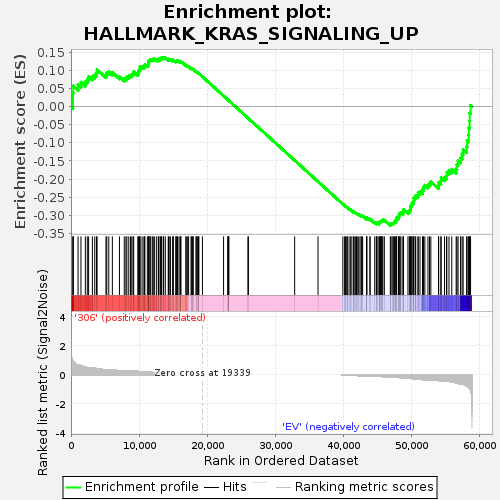
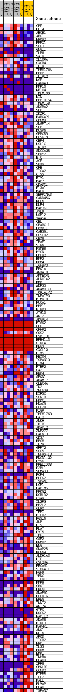
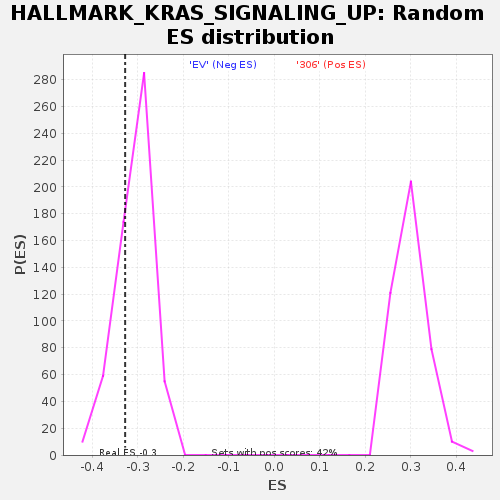

| | | Dataset | 306_EV_express.306_EV.cls#306_versus_EV |
| Phenotype | 306_EV.cls#306_versus_EV |
| Upregulated in class | EV |
| GeneSet | HALLMARK_KRAS_SIGNALING_UP |
| Enrichment Score (ES) | -0.32819223 |
| Normalized Enrichment Score (NES) | -1.0709398 |
| Nominal p-value | 0.22984563 |
| FDR q-value | 0.66836774 |
| FWER p-Value | 1.0 |
Table: GSEA Results Summary

Fig 1: Enrichment plot: HALLMARK_KRAS_SIGNALING_UP
Profile of the Running ES Score & Positions of GeneSet Members on the Rank Ordered List
| SYMBOL | TITLE | RANK IN GENE LIST | RANK METRIC SCORE | RUNNING ES | CORE ENRICHMENT | | 1 | CPE | NNN | 291 | 0.920 | 0.0160 | No |
| 2 | FLT4 | NNN | 292 | 0.920 | 0.0370 | No |
| 3 | ABCB1 | NNN | 335 | 0.903 | 0.0569 | No |
| 4 | ARG1 | NNN | 1034 | 0.674 | 0.0603 | No |
| 5 | NR0B2 | NNN | 1463 | 0.615 | 0.0670 | No |
| 6 | PRRX1 | NNN | 2102 | 0.532 | 0.0683 | No |
| 7 | SCG3 | NNN | 2388 | 0.494 | 0.0747 | No |
| 8 | GNG11 | NNN | 2580 | 0.482 | 0.0824 | No |
| 9 | TLR8 | NNN | 3138 | 0.465 | 0.0835 | No |
| 10 | SATB1 | NNN | 3484 | 0.450 | 0.0879 | No |
| 11 | IL10RA | NNN | 3736 | 0.427 | 0.0934 | No |
| 12 | CXCR4 | NNN | 3829 | 0.421 | 0.1014 | No |
| 13 | IL1B | NNN | 5129 | 0.345 | 0.0871 | No |
| 14 | TMEM176A | NNN | 5250 | 0.337 | 0.0927 | No |
| 15 | PPBP | NNN | 5544 | 0.328 | 0.0952 | No |
| 16 | IL1RL2 | NNN | 6066 | 0.321 | 0.0936 | No |
| 17 | NGF | NNN | 7106 | 0.274 | 0.0822 | No |
| 18 | GABRA3 | NNN | 7818 | 0.274 | 0.0763 | No |
| 19 | MMP10 | NNN | 8056 | 0.274 | 0.0785 | No |
| 20 | NR1H4 | NNN | 8198 | 0.274 | 0.0823 | No |
| 21 | TMEM100 | NNN | 8473 | 0.274 | 0.0839 | No |
| 22 | NIN | NNN | 8731 | 0.273 | 0.0857 | No |
| 23 | PPP1R15A | NNN | 8919 | 0.265 | 0.0886 | No |
| 24 | TMEM158 | NNN | 9109 | 0.256 | 0.0912 | No |
| 25 | ADGRA2 | NNN | 9200 | 0.252 | 0.0954 | No |
| 26 | SPP1 | NNN | 9806 | 0.230 | 0.0904 | No |
| 27 | IKZF1 | NNN | 9919 | 0.225 | 0.0936 | No |
| 28 | RABGAP1L | NNN | 9956 | 0.223 | 0.0980 | No |
| 29 | GPNMB | NNN | 10005 | 0.221 | 0.1023 | No |
| 30 | ANGPTL4 | NNN | 10116 | 0.218 | 0.1054 | No |
| 31 | SLPI | NNN | 10129 | 0.218 | 0.1101 | No |
| 32 | DUSP6 | NNN | 10429 | 0.206 | 0.1097 | No |
| 33 | GPRC5B | NNN | 10700 | 0.196 | 0.1096 | No |
| 34 | PCSK1N | NNN | 10770 | 0.194 | 0.1128 | No |
| 35 | CBR4 | NNN | 10838 | 0.192 | 0.1161 | No |
| 36 | USH1C | NNN | 11201 | 0.186 | 0.1141 | No |
| 37 | TRIB2 | NNN | 11372 | 0.180 | 0.1153 | No |
| 38 | SDCCAG8 | NNN | 11380 | 0.180 | 0.1193 | No |
| 39 | SPRY2 | NNN | 11409 | 0.179 | 0.1229 | No |
| 40 | BTC | NNN | 11437 | 0.178 | 0.1265 | No |
| 41 | ACE | NNN | 11597 | 0.173 | 0.1278 | No |
| 42 | SOX9 | NNN | 11692 | 0.169 | 0.1300 | No |
| 43 | CFB | NNN | 11931 | 0.163 | 0.1297 | No |
| 44 | ITGA2 | NNN | 12069 | 0.158 | 0.1309 | No |
| 45 | CTSS | NNN | 12274 | 0.152 | 0.1309 | No |
| 46 | ETV1 | NNN | 12568 | 0.145 | 0.1292 | No |
| 47 | MAP7 | NNN | 12828 | 0.138 | 0.1279 | No |
| 48 | CDADC1 | NNN | 12832 | 0.138 | 0.1310 | No |
| 49 | F13A1 | NNN | 13082 | 0.131 | 0.1298 | No |
| 50 | MAFB | NNN | 13089 | 0.131 | 0.1327 | No |
| 51 | SERPINA3 | NNN | 13245 | 0.126 | 0.1329 | No |
| 52 | GADD45G | NNN | 13289 | 0.125 | 0.1350 | No |
| 53 | RELN | NNN | 13537 | 0.120 | 0.1335 | No |
| 54 | KLF4 | NNN | 13595 | 0.118 | 0.1352 | No |
| 55 | MAP3K1 | NNN | 13838 | 0.112 | 0.1337 | No |
| 56 | AVL9 | NNN | 14280 | 0.101 | 0.1284 | No |
| 57 | USP12 | NNN | 14287 | 0.101 | 0.1306 | No |
| 58 | VWA5A | NNN | 14500 | 0.096 | 0.1292 | No |
| 59 | CBL | NNN | 14581 | 0.094 | 0.1300 | No |
| 60 | SPARCL1 | NNN | 14924 | 0.087 | 0.1261 | No |
| 61 | HOXD11 | NNN | 14964 | 0.086 | 0.1274 | No |
| 62 | CAB39L | NNN | 15002 | 0.085 | 0.1287 | No |
| 63 | CCSER2 | NNN | 15371 | 0.081 | 0.1243 | No |
| 64 | CBX8 | NNN | 15440 | 0.079 | 0.1249 | No |
| 65 | TRAF1 | NNN | 15527 | 0.078 | 0.1252 | No |
| 66 | STRN | NNN | 15609 | 0.075 | 0.1256 | No |
| 67 | PSMB8 | NNN | 15703 | 0.074 | 0.1257 | No |
| 68 | MYCN | NNN | 15974 | 0.068 | 0.1226 | No |
| 69 | EPHB2 | NNN | 16072 | 0.066 | 0.1225 | No |
| 70 | BMP2 | NNN | 16096 | 0.065 | 0.1236 | No |
| 71 | RBM4 | NNN | 16110 | 0.065 | 0.1248 | No |
| 72 | IGFBP3 | NNN | 16853 | 0.054 | 0.1134 | No |
| 73 | ERO1A | NNN | 16901 | 0.052 | 0.1138 | No |
| 74 | ANXA10 | NNN | 17066 | 0.049 | 0.1121 | No |
| 75 | AMMECR1 | NNN | 17251 | 0.045 | 0.1100 | No |
| 76 | ALDH1A2 | NNN | 17640 | 0.037 | 0.1042 | No |
| 77 | MMD | NNN | 17641 | 0.037 | 0.1051 | No |
| 78 | WDR33 | NNN | 17804 | 0.034 | 0.1031 | No |
| 79 | ADAMDEC1 | NNN | 17892 | 0.033 | 0.1023 | No |
| 80 | TOR1AIP2 | NNN | 17920 | 0.032 | 0.1026 | No |
| 81 | TNFAIP3 | NNN | 18358 | 0.023 | 0.0957 | No |
| 82 | MTMR10 | NNN | 18367 | 0.023 | 0.0961 | No |
| 83 | FUCA1 | NNN | 18538 | 0.019 | 0.0936 | No |
| 84 | MMP11 | NNN | 18656 | 0.016 | 0.0920 | No |
| 85 | BTBD3 | NNN | 18713 | 0.016 | 0.0914 | No |
| 86 | ATG10 | NNN | 18760 | 0.015 | 0.0909 | No |
| 87 | AKT2 | NNN | 19286 | 0.002 | 0.0820 | No |
| 88 | ADGRL4 | NNN | 22385 | 0.000 | 0.0292 | No |
| 89 | PTGS2 | NNN | 23008 | 0.000 | 0.0186 | No |
| 90 | CFH | NNN | 23061 | 0.000 | 0.0177 | No |
| 91 | CFHR2 | NNN | 23064 | 0.000 | 0.0177 | No |
| 92 | G0S2 | NNN | 23143 | 0.000 | 0.0163 | No |
| 93 | HSD11B1 | NNN | 23144 | 0.000 | 0.0163 | No |
| 94 | EPB41L3 | NNN | 25960 | 0.000 | -0.0317 | No |
| 95 | CIDEA | NNN | 26031 | 0.000 | -0.0329 | No |
| 96 | PEG3 | NNN | 32817 | 0.000 | -0.1486 | No |
| 97 | CXCL10 | NNN | 36245 | 0.000 | -0.2070 | No |
| 98 | ETV5 | NNN | 39889 | -0.005 | -0.2691 | No |
| 99 | FBXO4 | NNN | 40143 | -0.011 | -0.2731 | No |
| 100 | TSPAN13 | NNN | 40288 | -0.014 | -0.2753 | No |
| 101 | ETV4 | NNN | 40341 | -0.015 | -0.2758 | No |
| 102 | PTBP2 | NNN | 40505 | -0.019 | -0.2781 | No |
| 103 | CA2 | NNN | 40526 | -0.020 | -0.2780 | No |
| 104 | RBP4 | NNN | 40795 | -0.025 | -0.2820 | No |
| 105 | SPON1 | NNN | 41049 | -0.031 | -0.2856 | No |
| 106 | ADAM17 | NNN | 41087 | -0.031 | -0.2856 | No |
| 107 | CLEC4A | NNN | 41397 | -0.037 | -0.2900 | No |
| 108 | ID2 | NNN | 41481 | -0.039 | -0.2905 | No |
| 109 | ZNF639 | NNN | 41536 | -0.040 | -0.2905 | No |
| 110 | KIF5C | NNN | 41760 | -0.045 | -0.2933 | No |
| 111 | SCN1B | NNN | 41885 | -0.047 | -0.2943 | No |
| 112 | HKDC1 | NNN | 41999 | -0.050 | -0.2951 | No |
| 113 | HDAC9 | NNN | 42211 | -0.054 | -0.2975 | No |
| 114 | CCL20 | NNN | 42407 | -0.059 | -0.2995 | No |
| 115 | PIGR | NNN | 42594 | -0.063 | -0.3012 | No |
| 116 | TMEM176B | NNN | 42676 | -0.064 | -0.3011 | No |
| 117 | LAT2 | NNN | 42790 | -0.067 | -0.3015 | No |
| 118 | ANKH | NNN | 43378 | -0.080 | -0.3097 | No |
| 119 | TRIB1 | NNN | 43384 | -0.080 | -0.3080 | No |
| 120 | AKAP12 | NNN | 43398 | -0.080 | -0.3064 | No |
| 121 | ZNF277 | NNN | 43869 | -0.091 | -0.3123 | No |
| 122 | GALNT3 | NNN | 43873 | -0.091 | -0.3103 | No |
| 123 | CD37 | NNN | 44566 | -0.094 | -0.3199 | No |
| 124 | BPGM | NNN | 44796 | -0.100 | -0.3216 | No |
| 125 | IL7R | NNN | 44843 | -0.101 | -0.3200 | No |
| 126 | GFPT2 | NNN | 44914 | -0.103 | -0.3189 | No |
| 127 | SCG5 | NNN | 45196 | -0.109 | -0.3212 | No |
| 128 | TNFRSF1B | NNN | 45215 | -0.110 | -0.3190 | No |
| 129 | PDCD1LG2 | NNN | 45275 | -0.110 | -0.3175 | No |
| 130 | LY96 | NNN | 45401 | -0.112 | -0.3171 | No |
| 131 | PRELID3B | NNN | 45490 | -0.114 | -0.3160 | No |
| 132 | F2RL1 | NNN | 45578 | -0.116 | -0.3148 | No |
| 133 | SEMA3B | NNN | 45650 | -0.118 | -0.3133 | No |
| 134 | PCP4 | NNN | 45754 | -0.120 | -0.3124 | No |
| 135 | PLEK2 | NNN | 45974 | -0.125 | -0.3133 | No |
| 136 | TSPAN1 | NNN | 46851 | -0.149 | -0.3248 | Yes |
| 137 | LCP1 | NNN | 46938 | -0.151 | -0.3228 | Yes |
| 138 | LAPTM5 | NNN | 47113 | -0.155 | -0.3222 | Yes |
| 139 | PRKG2 | NNN | 47269 | -0.159 | -0.3213 | Yes |
| 140 | DCBLD2 | NNN | 47376 | -0.163 | -0.3193 | Yes |
| 141 | C3AR1 | NNN | 47459 | -0.165 | -0.3170 | Yes |
| 142 | IL2RG | NNN | 47661 | -0.171 | -0.3165 | Yes |
| 143 | MPZL2 | NNN | 47665 | -0.172 | -0.3126 | Yes |
| 144 | GLRX | NNN | 47749 | -0.175 | -0.3101 | Yes |
| 145 | TFPI | NNN | 47755 | -0.175 | -0.3062 | Yes |
| 146 | PTCD2 | NNN | 48024 | -0.182 | -0.3066 | Yes |
| 147 | RGS16 | NNN | 48065 | -0.184 | -0.3031 | Yes |
| 148 | JUP | NNN | 48141 | -0.186 | -0.3001 | Yes |
| 149 | ETS1 | NNN | 48145 | -0.186 | -0.2959 | Yes |
| 150 | PLAT | NNN | 48281 | -0.191 | -0.2939 | Yes |
| 151 | EVI5 | NNN | 48410 | -0.196 | -0.2916 | Yes |
| 152 | TPH1 | NNN | 48707 | -0.207 | -0.2919 | Yes |
| 153 | CSF2 | NNN | 48757 | -0.209 | -0.2880 | Yes |
| 154 | DNMBP | NNN | 48788 | -0.210 | -0.2837 | Yes |
| 155 | ENG | NNN | 49440 | -0.237 | -0.2894 | Yes |
| 156 | SNAP25 | NNN | 49653 | -0.237 | -0.2877 | Yes |
| 157 | KCNN4 | NNN | 49755 | -0.239 | -0.2839 | Yes |
| 158 | ALDH1A3 | NNN | 49798 | -0.241 | -0.2791 | Yes |
| 159 | LIF | NNN | 49829 | -0.243 | -0.2741 | Yes |
| 160 | CSF2RA | NNN | 49994 | -0.250 | -0.2712 | Yes |
| 161 | PECAM1 | NNN | 50033 | -0.252 | -0.2661 | Yes |
| 162 | ST6GAL1 | NNN | 50201 | -0.258 | -0.2631 | Yes |
| 163 | FGF9 | NNN | 50283 | -0.263 | -0.2585 | Yes |
| 164 | YRDC | NNN | 50284 | -0.263 | -0.2525 | Yes |
| 165 | ITGBL1 | NNN | 50514 | -0.275 | -0.2501 | Yes |
| 166 | MMP9 | NNN | 50579 | -0.278 | -0.2449 | Yes |
| 167 | CROT | NNN | 50914 | -0.294 | -0.2439 | Yes |
| 168 | HBEGF | NNN | 50938 | -0.296 | -0.2375 | Yes |
| 169 | SNAP91 | NNN | 51202 | -0.306 | -0.2350 | Yes |
| 170 | FCER1G | NNN | 51569 | -0.326 | -0.2338 | Yes |
| 171 | EREG | NNN | 51636 | -0.329 | -0.2275 | Yes |
| 172 | TNNT2 | NNN | 51728 | -0.336 | -0.2214 | Yes |
| 173 | WNT7A | NNN | 51918 | -0.340 | -0.2168 | Yes |
| 174 | GYPC | NNN | 52373 | -0.357 | -0.2164 | Yes |
| 175 | DOCK2 | NNN | 52607 | -0.357 | -0.2123 | Yes |
| 176 | NAP1L2 | NNN | 52796 | -0.357 | -0.2073 | Yes |
| 177 | ADAM8 | NNN | 53925 | -0.387 | -0.2177 | Yes |
| 178 | BIRC3 | NNN | 53944 | -0.389 | -0.2092 | Yes |
| 179 | MAP4K1 | NNN | 54266 | -0.412 | -0.2053 | Yes |
| 180 | ANO1 | NNN | 54308 | -0.416 | -0.1965 | Yes |
| 181 | RETN | NNN | 54799 | -0.417 | -0.1953 | Yes |
| 182 | APOD | NNN | 55093 | -0.430 | -0.1905 | Yes |
| 183 | ITGB2 | NNN | 55142 | -0.435 | -0.1814 | Yes |
| 184 | NRP1 | NNN | 55461 | -0.449 | -0.1766 | Yes |
| 185 | IL33 | NNN | 55871 | -0.472 | -0.1728 | Yes |
| 186 | PRDM1 | NNN | 56510 | -0.547 | -0.1712 | Yes |
| 187 | EMP1 | NNN | 56618 | -0.561 | -0.1603 | Yes |
| 188 | INHBA | NNN | 56790 | -0.583 | -0.1499 | Yes |
| 189 | PLAUR | NNN | 57157 | -0.634 | -0.1417 | Yes |
| 190 | IRF8 | NNN | 57379 | -0.643 | -0.1308 | Yes |
| 191 | CMKLR1 | NNN | 57535 | -0.648 | -0.1187 | Yes |
| 192 | CCND2 | NNN | 58049 | -0.742 | -0.1105 | Yes |
| 193 | PTPRR | NNN | 58111 | -0.765 | -0.0941 | Yes |
| 194 | IGF2 | NNN | 58345 | -0.849 | -0.0788 | Yes |
| 195 | MALL | NNN | 58365 | -0.859 | -0.0595 | Yes |
| 196 | PLVAP | NNN | 58485 | -0.947 | -0.0399 | Yes |
| 197 | PLAU | NNN | 58498 | -0.960 | -0.0183 | Yes |
| 198 | TSPAN7 | NNN | 58623 | -1.047 | 0.0035 | Yes |
Table: GSEA details [plain text format]

Fig 2: HALLMARK_KRAS_SIGNALING_UP
Blue-Pink O' Gram in the Space of the Analyzed GeneSet

Fig 3: HALLMARK_KRAS_SIGNALING_UP: Random ES distribution
Gene set null distribution of ES for HALLMARK_KRAS_SIGNALING_UP